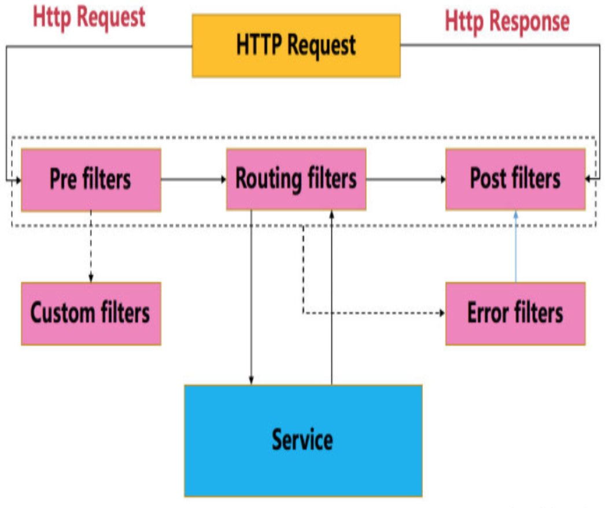

原文连接:https://www.cnblogs.com/gdjlc/p/11899276.html
Zuul提供了服务网关的功能，可以实现负载均衡、反向代理、动态路由、请求转发等功能。
Zuul大部分功能是通过过滤器实现的，除了标准的四种过滤器类型，还支持自定义过滤器。
使用@EnableZuulProxy注解，Spring容器初始化时，会将Zuul的相关配置初始化，其中包含一个Spring Boot的Bean：ServletRegistrationBean，该类主要用于注册Servlet。在Servlet的service方法中，执行各种Zuul过滤器。下图为HTTP请求在ZuulServlet中的生命周期。

Spring Boot Web项目中整合Zuul:
一、创建hello源服务项目
1、创建项目
开发工具：IntelliJ IDEA 2019.2.3
IDEA中创建一个新的SpringBoot项目，名称为“hello-server”，SpringBoot版本选择2.1.10，在选择Dependencies(依赖)的界面勾选Web -> Spring Web。
2、修改启动类代码
添加一个hello服务
package com.example.helloserver;
import org.springframework.boot.SpringApplication;
import org.springframework.boot.autoconfigure.SpringBootApplication;
import org.springframework.web.bind.annotation.GetMapping;
import org.springframework.web.bind.annotation.PathVariable;
import org.springframework.web.bind.annotation.RestController;
@SpringBootApplication
@RestController
public class HelloServerApplication {
public static void main(String[] args) {
SpringApplication.run(HelloServerApplication.class, args);
}
@GetMapping("/hello/{name}")
public String hello(@PathVariable String name){
return "hello " + name;
}
}3、修改配置application.yml，指定端口号8090
server:
port: 8090二、测试路由功能
1、创建项目
IDEA中创建一个新的SpringBoot项目，名称为“zuul-router”，SpringBoot版本选择2.1.10，在选择Dependencies(依赖)的界面勾选Web -> Spring Web，Spring Cloud Routing -> Zuul。
主要添加了spring-boot-starter-web和spring-cloud-starter-netflix-zuul两个依赖项。
pom.xml完整内容如下：


<?xml version="1.0" encoding="UTF-8"?>
<project xmlns="http://maven.apache.org/POM/4.0.0" xmlns:xsi="http://www.w3.org/2001/XMLSchema-instance"
xsi:schemaLocation="http://maven.apache.org/POM/4.0.0 https://maven.apache.org/xsd/maven-4.0.0.xsd">
<modelVersion>4.0.0</modelVersion>
<parent>
<groupId>org.springframework.boot</groupId>
<artifactId>spring-boot-starter-parent</artifactId>
<version>2.1.10.RELEASE</version>
<relativePath/> <!-- lookup parent from repository -->
</parent>
<groupId>com.example</groupId>
<artifactId>zuul-router</artifactId>
<version>0.0.1-SNAPSHOT</version>
<name>zuul-router</name>
<description>Demo project for Spring Boot</description>
<properties>
<java.version>1.8</java.version>
<spring-cloud.version>Greenwich.SR4</spring-cloud.version>
</properties>
<dependencies>
<dependency>
<groupId>org.springframework.boot</groupId>
<artifactId>spring-boot-starter-web</artifactId>
</dependency>
<dependency>
<groupId>org.springframework.cloud</groupId>
<artifactId>spring-cloud-starter-netflix-zuul</artifactId>
</dependency>
<dependency>
<groupId>org.springframework.boot</groupId>
<artifactId>spring-boot-starter-test</artifactId>
<scope>test</scope>
</dependency>
</dependencies>
<dependencyManagement>
<dependencies>
<dependency>
<groupId>org.springframework.cloud</groupId>
<artifactId>spring-cloud-dependencies</artifactId>
<version>${spring-cloud.version}</version>
<type>pom</type>
<scope>import</scope>
</dependency>
</dependencies>
</dependencyManagement>
<build>
<plugins>
<plugin>
<groupId>org.springframework.boot</groupId>
<artifactId>spring-boot-maven-plugin</artifactId>
</plugin>
</plugins>
</build>
</project>2、修改启动类代码
增加注解@EnableZuulProxy
package com.example.zuulrouter;
import org.springframework.boot.SpringApplication;
import org.springframework.boot.autoconfigure.SpringBootApplication;
import org.springframework.cloud.netflix.zuul.EnableZuulProxy;
@SpringBootApplication
@EnableZuulProxy
public class ZuulRouterApplication {
public static void main(String[] args) {
SpringApplication.run(ZuulRouterApplication.class, args);
}
}3、修改配置application.yml
zuul:
routes:
test:
url: http://localhost:8090加入以上配置后，发送给http://localhost:8080/test的所有请求会被转发到8090端口。
在浏览器访问http://localhost:8080/test/hello/lc，页面输出：hello lc
上面路由配置省略了path，默认情况下用routeId“test”作为path。
修改为：
zuul:
routes:
test:
path: /a/**
url: http://localhost:8090
b:
url: https://www.cnblogs.com/gdjlc现在浏览器访问http://localhost:8080/a/hello/lc，页面输出：hello lc
访问http://localhost:8080/b，页面显示https://www.cnblogs.com/gdjlc的内容